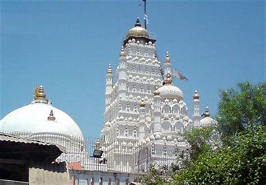

Welcome To Kheda ...

It Is Also Known As Kaira City
The name Kheda originated from the Sanskrit term Kshetra (lit. 'land or field'). Khetaka in used as a name of a region surrounding the place in ancient literature. It is also mentioned as a town from 12th to 17th century. Ganapatha (dated 2nd century BCE), one of the five volumes of Pāṇini' s grammar mentions Khetaka as a name of the region. It is also mentioned as Divyanagar in 133rd chapter of Padmapurana. The 7th and 8th century copper-plates of Maitraka dynasty mentions Khetaka as an administrative division as well as there are mentions of it as a place of Brahmin residence and a Rashtrakuta-controlled town in other copper-plates. There were about 750 villages under that administrative division. It is also mentioned in Nimbavati story of Dashakumaracharita, Acharanga Sutra, Merutunga's Prabandhachintamani (1305 CE), Puratana-prabandha-sangraha (before 15th century, multiple authors) and Jinaprabha's Vividh-tirtha-kalpa (c. 1332 CE).
It was under Chaulukya and Vaghela dynasties from 10th to the start of the 14th century. It was brought under Gujarat Sultanate then. The town of Kheda passed to the Babi Dynasty (of Pashtun descent) early in the eighteenth century, with whom it remained until 1763, when it was taken by the Marathas under Damajirao Gaekwad. Mahmad Khan Babi built its fort. The Marathas under Anandrao Gaekwad ceded the district to the British in 1803, and it became part of the Bombay Presidency of British India. Nevertheless Kaira was still entitled, at least in 1901, to a tribute of 488 Rupees from the Koli petty princely state of Ghorasar. Kheda was a large military station until 1830, when the cantonment was removed to Deesa. Brahmin established many villages in the Kheda District area, as did Jats and other groups.
Famous Places in Kheda City
- Ranchhodrai Dakor Temple
- Vadtal
- Shree Siddhivinayak Mandir
- Utkanteshwar Mahadev Temple
- Siddi Saiyad Mosquee
Kheda City Famous Food Item
- Batata Vada
- Usal
- Bateka Poha
- Fafda
© Copyright Reserved
Go To Main Page